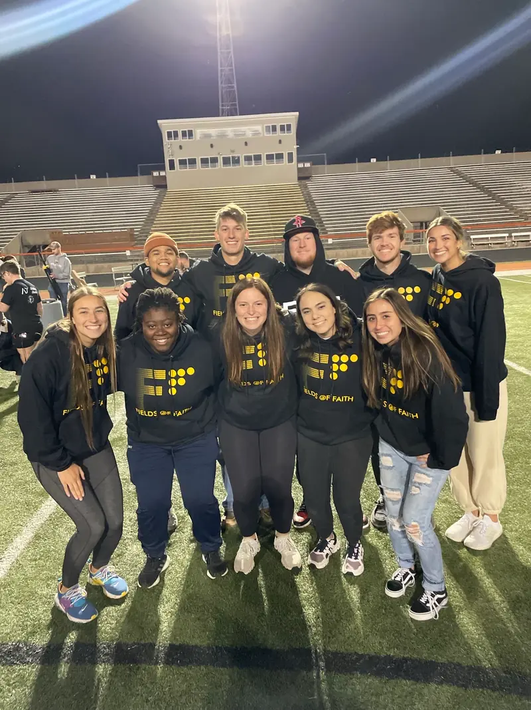

Women’s Lacrosse
Collegiate student-athlete at Midland University from 2021–2025.
Team Captain · 2024–2025Data Systems & Automation Specialist
Marketing Strategy · Marketing Operations · Data · Automation · AI
I’m a marketer who builds the systems behind better marketing and business operations. My work spans campaign strategy, measurement, data infrastructure, workflow automation, and AI-enabled internal tools.
01
I began my career in digital marketing, building experience across campaign strategy, performance analysis, client strategy, SEO, and digital advertising. As I moved closer to reporting and measurement, I became increasingly interested in the systems behind the work: how data moves, how platforms connect, and where better processes can help teams work more effectively.
Today, I’m a Data Systems & Automation Specialist at Performance Digital. I work across marketing data infrastructure, reporting systems, APIs, workflow automation, tracking, and AI-enabled tools that connect strategy with execution.
I bring a marketer’s perspective to technical work. I start with the business problem, understand the people and processes involved, and then use data, systems, automation, and AI to build a practical solution. Much of this work began with noticing a cost, reliability, or process problem and teaching myself the tools needed to solve it.
My Career Path
Leadership & Athletics
Competing as a collegiate athlete taught me to communicate clearly, adapt quickly, stay disciplined, and keep improving through feedback. Those habits continue to shape how I solve technical problems and work with others today.
Collegiate student-athlete at Midland University from 2021–2025.
Team Captain · 2024–2025Collegiate student-athlete and member of the team leadership council.
Leadership Council · 2023
Led small groups, collaborated with other student leaders, and helped coordinate campus events and community-building initiatives.
FCA Leader02
Selected systems and workflows that show how I connect marketing context, reliable data, and practical implementation.
Data Infrastructure
Helped move agency reporting from an increasingly expensive, connector-dependent setup toward centralized BigQuery datasets supported by APIs, scheduled ingestion, and standardized client mapping.
Data Reliability
Built a proactive monitoring workflow across BigQuery, Supabase, and n8n workflow status to surface missing data, unmapped records, suspicious values, and ingestion errors before they reached reporting.
Sales Automation
Built and internally tested an end-to-end workflow that turns a structured sales intake into AI-assisted research, a generated document, and delivery to the appropriate representative.
Applied AI Prototype
Prototyped a BigQuery-backed reporting agent that interprets natural-language requests, resolves the correct client and platforms, and retrieves the relevant reporting data within defined guardrails.
03
A combination of marketing knowledge and technical implementation allows me to work across the full path from business need to usable system.
BigQuery, SQL, Looker Studio, Supabase, data pipelines, schemas, field types, mapping, scheduled ingestion, and reusable reporting infrastructure.
n8n, Make, APIs, OAuth and service-account authentication, HTTP requests, webhooks, JSON, conditional routing, and process automation.
GA4, Google Tag Manager, Meta and Illumin pixels, event-based tracking, custom conversions, conversion hierarchy, Meta Ads Manager, and Google Ads.
Campaign strategy, audience development, retargeting, Local SEO, Google Business Profile, citations, on-page SEO, AEO/GEO, HTML, and CSS.
04
I focus on the layer beneath dashboards and AI tools: preparing, structuring, connecting, and monitoring data so people and systems can use it reliably. My workflow design starts with the business process, then breaks it into triggers, logic, actions, routing, outputs, and the human review points needed for responsible implementation.
05
I have managed recurring Local SEO work across client accounts, including citation management, Google Business Profile cleanup and optimization, photos, reviews, monthly updates, and category corrections. I also review page titles, metadata, heading structure, and image alt text so new websites launch with a sound SEO foundation.